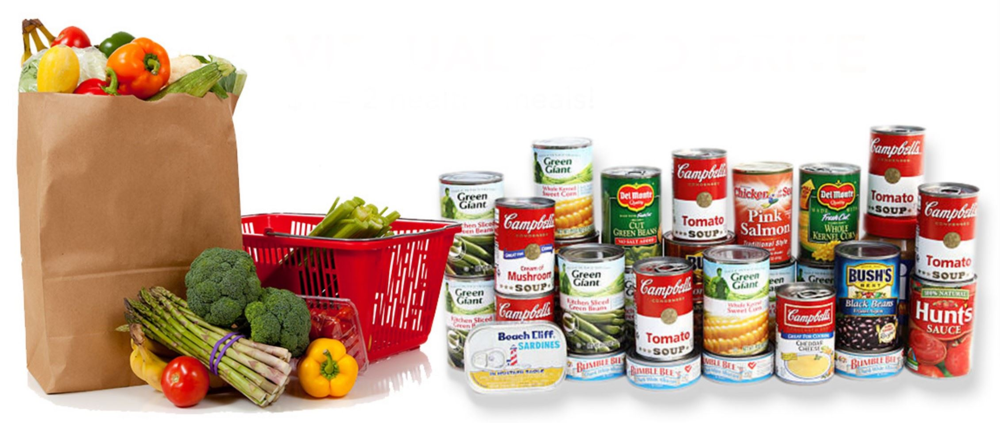

Here are some ways you can help both yours and other communities.
1. COMMUNITY GARDENS.
2. LOCAL FARMERS MARKETS OR FOOD VENDORS.
3. FOOD PROGRAMS.

HOW CAN YOU HELP?
Donate money or imperishable food to food pantries and local organizations that fight against hunger! It takes a simple Google search for those near you.
Volunteer at local food pantries or distribution events.
Unlearn stigma surrounding food deserts and those living in them.
Educate others.
Email your local mayor, lawmakers, and/or senators to urge them to take action against food insecurity.